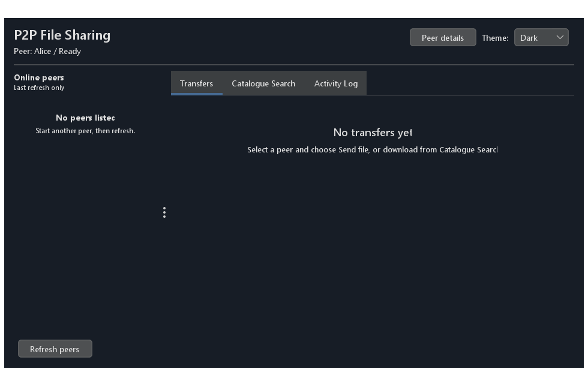
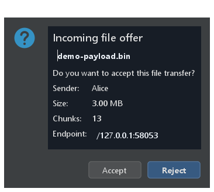
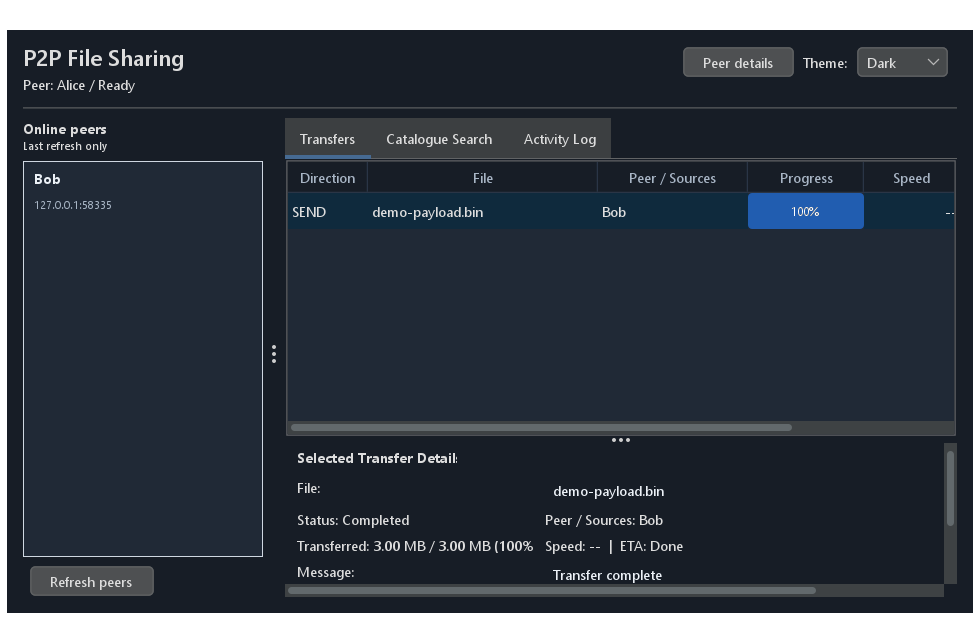

Application startup (Light theme)

Alice window after startup in FlatLaf Light theme with peer Bob listed in Online peers and empty state guidance.
Each peer runs the same desktop application and can send or receive. The window shows identity, discoverable peers, and one row per transfer session.
Peer: Alice | ID: peer-a | Listen port: 6001
Online peers: Bob (…:6002)
Actions: [Send file…] [Refresh peers]
Transfers: Direction | File | Peer | Progress | Speed | StatusSchematic based on MainFrame; not a runtime screenshot.
Alice window after startup in FlatLaf Light theme with peer Bob listed in Online peers and empty state guidance.

Alice window switched to FlatLaf Dark theme via the session theme selector, with high contrast dark surfaces.

Search tab listing matching published files with file size, chunk count, SHA-256 hash, and readable selected-file details panel.

Modeless GridBagLayout dialog with prominent filename, metadata summary, and explicit Accept/Reject buttons.

Themed incoming file offer dialog recolored in Dark mode without interrupting the decision timer.

Transfers table showing completed transfer at 100% with determinate progress bar and selected transfer inspector.

Transfers view in Dark theme showing green Completed status and themed inspector details.
Modeless configuration surface replacing the legacy read-only dialog. Allows editing display name, port, tracker host/port, directory paths (with native browse dialogs and path resolution previews), auto-accept, and startup update checking. Features a collapsible Advanced section for transfer parameters (chunk size, timeouts, concurrency bounds). Persists atomically with optimistic conflict detection; running runtime continues unaffected until an explicit, idle-verified restart.
Dedicated update toolbar below the header with status badge. The Software Updates dialog connects to GitHub Releases, downloads signed peer-app.jar packages with real-time progress, validates Ed25519 signatures and SHA-256 digests, and initiates atomic replacement with automatic rollback on launch failure.
| Surface | What it does |
|---|---|
| Header bar & Theme | Displays application title, current peer status (Peer: <name> / Tracker connected, Reconnecting to tracker..., or Tracker unavailable — direct transfers available; Starting, Restart in progress, and Stopped take precedence), session Theme selector (Light and Dark), and Settings... button. |
| Settings dialog | Owned modeless dialog for editing peer display name, listen port, tracker endpoint, download and shared folders (with browse and resolved path preview), auto-accept, and startup update checking. A collapsible Advanced section configures chunk size, five transfer timeouts, and max concurrent transfers. Saving preserves unknown keys and enforces file locking. Protects against accidental draft loss on user-driven close (Escape, Close button, window X) with an explicit confirmation dialog offering Keep editing (default) and Discard changes. Changes apply on restart. |
| Updates toolbar & dialog | Reachable toolbar with Software updates... button and dynamic status badge. The Updates dialog shows installed version, GitHub Releases link, release notes (plain text, capped at 32 KiB), download progress bar, and action buttons (Check now, Update now, Cancel download, Restart and install). Supports states: Not checked, Checking, Up to date, No published release, Update available, Downloading, Verifying, Ready to restart, Restarting, and actionable failures. |
| Peers sidebar | Lists discovered live peers with two-line display (name and muted host:port, measured row height, literal tooltip with ID and address). An owned wrapping status field displays Last refreshed <time> when connected, or Tracker unavailable — showing last known peers from <time>. Direct sends may still work. during an outage. Cached peers remain selectable and usable for direct transfers without modal error dialogs. |
| Refresh peers | Requests a fresh tracker peer list in a background SwingWorker; guards against duplicate clicks and retains selected peer across refreshes. If the tracker is unavailable, failure is logged to the Activity Log and immediate recovery is triggered without clearing cached peers or opening error dialogs. |
| Send file… | Primary-styled button; requires one selected peer, opens native file chooser, and initiates direct transfer. Can also be triggered by double-clicking a peer or via right-click context menu. Fully usable during tracker outages for cached peers. |
| Local Sharing strip | Positioned directly above the Catalogue Search toolbar. Displays the selectable read-only shared folder path, wrapping live sharing status (Shared files up to date (<count>), Scanning shared folder..., Local index updated — waiting for tracker, or local error details), and a Rescan shared folder button that forces an authoritative local re-enumeration and hashing pass without requiring tracker connectivity. Stable top-level files are automatically shared and published. |
| Catalogue Search tab | Two-row search toolbar layout with keyword input on the first row and primary-styled Search Catalogue and Download Selected buttons on the second. Displays matching published files with columns for File Name (260px), Size, Chunks, File SHA-256 (monospaced), and Providers. Includes compact scrollable selected-result detail panel. Preserves previous search results and selection during tracker outages, labeled Last results for "<query>" — tracker unavailable; availability unverified. Disables new search requests while offline while keeping selected-result downloads enabled. |
| Incoming file prompt | Themed modeless dialog with prominent filename, metadata summary, sender identity (display name and endpoint), file size, chunk counts, and explicit Accept / Reject buttons (Reject default). |
| Transfers tab | Displays active and completed transfers with columns: Direction (80px), File (230px+), Peer / Sources (150px), Progress (determinate progress bar + %), Speed, ETA, and Status (sentence-case semantic color with tooltip). Row height 36px with empty state guidance. |
| Selected transfer inspector | Inspector panel below transfers table showing full filename, status, peer/source text, bytes transferred / total, speed, ETA, full message, and labeled Chunk coverage strip (up to 64 buckets: Received, Partial range, Missing) with overall-progress fallback. |
| Activity Log tab | Theme-aware monospaced chronological event journal recording transfer events and connection state transitions with 500-line trimming policy, Clear Log button, and empty state guidance. |
PREPARING while hashing.COMPLETED, no .part suffix, and matching SHA-256.REJECTED and no completed file appears.“The tracker is a directory, not a relay. It returns peer addresses. Alice then creates a separate TCP connection directly to Bob. Bob verifies every chunk before acknowledging it and exposes the final file only after its complete SHA-256 matches.”